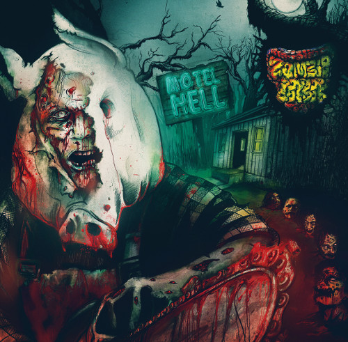

Banda/Artista: OFFAL / ZOOMBIE COOKBOOK
Título: Dementia Trash / Motel Hell (split 7")
Lançamento: Black Hole Productions
Ano: 2014
Contatos:
Zoombie Cookbook
http://www.zombiecookbook.com.br contato@zombiecookbook.com.br Offal http://www.offalgore.com/ Resenha por Cristiano Passos
Publicada no dia 29/03/2015

Por onde começar uma resenha sobre um lançamento desses? Afinal de contas, as duas bandas são absolutamente fantásticas (ambas já resenhadas aqui, aliás), o som apresentado faz vibrar o sangue deste ouvinte desde o primeiro acorde e o material em si, além de ser um adorável compacto, traz uma arte irrepreensível, belíssima de acordo com nossos conceitos distorcidos de beleza, claro! Além disso, este é mais um lançamento de um selo cuja história se confunde com a história do underground extremo brasileiro, a Black Hole Productions, dado bastante relevante para quem acompanha a evolução dessa bagaça toda desde a década de 1980. Por falar em passado, é óbvio – e ótimo – que o som nos remete diretamente aos primórdios do death metal grosseiro e estupidamente pesado de bandas como Autopsy, Impetigo, Master ou Asphyx, entre outras. No caso do Offal, as referências ao Autopsy são obrigatórias, tanto pela temática da banda, quanto pelas influências claras e assumidas pelos seus integrantes, a ponto de eles apresentarem um inédito e originalíssimo medley de dois sons clássicos dos mestres do gore, “Spinal extractions” e “Fiend for blood”. Como são dois sons curtos, a bordoada não dura mais do que 45 segundos, mal dando tempo para o ouvinte se recuperar da avassaladora faixa-título. Porém, antes de tecer meus comentários acerca dessa primeira faixa, é preciso dizer que, ao ouvir esse medley do Autopsy, é impossível não ser levado de volta ao tempo em que mesmo o metal extremo explorava sem pudor algum essa vertente das músicas ultracurtas, algo que era muito mais comum ao hardcore – o que é mais uma prova do parentesco evidente entre esses filhos de uma mesma cena underground. Nos anos 80, aliás, até mesmo bandas thrash/speed metal lançavam mão desse recurso como forma de atingir níveis mais extremos de brutalidade, como Hirax (“Hate, fear and power”), Nuclear Assault (“Hang the pope”) ou Soothsayer (“Deadly fear”), prática que parecia esquecida nos porões do submundo, mas que o Offal, por meio do Autopsy, retoma com maestria, arrancando suspiros saudosistas deste velho escriba e esfolando os ouvidos mais sensíveis sem dó! Cabe destacar com louvor essa iniciativa do Offal em reciclar e propor uma espécie de releitura desses clássicos, rompendo com a mesmice dos covers que nada trazem de inovador. Só pela ideia, já vale a audição! Bem, quanto ao som “Dementia trash: the cult of the low-budget cin”, este merece um comentário especial, pois é uma obra-prima do death metal, sem exageros. Muito bem construída, a faixa começa brutal, conduzida por um riff poderoso da guitarra de Tersis, gravado em um timbre cuja crueza em muito me lembrou os primeiros discos extremos brasileiros, na linha de Vulcano, Holocausto ou Mutilator, por exemplo. Animal! Contudo, a porrada aqui é bem “pior” e nada ingênua, com toneladas extra de peso e os vocais inigualavelmente insanos de André Luiz, um mestre da arte do gutural, além de ser um frontman piradíssimo, que parece foragido de um infecto hospício medieval! As mudanças de andamento de “Dementia trash” são fenomenais, assim como a belíssima (sim, e por que não?) melodia que embala o refrão, em um solo que carrega uma pungente melancolia e dá ainda mais profundidade à faixa. O alto nível das partes rápidas faz jus ao death metal que inspira o Offal e o peso mastodôntico das partes mais arrastadas leva o ouvinte ao transe definitivo. Ao final, a pancadaria volta a comer solta para preparar o ouvinte para os 45 segundos de Autopsy, deixando-o com cara de absoluto torpor e com aquele desejo de que a banda continue o massacre. Contudo, para os que querem um pouco mais, vale dizer que, segundo André Luiz, o disco novo já está gravado e, em breve, poderemos testemunhar mais um capítulo desse barulhento filme trash. Aliás, este filme não termina aqui mesmo! Depois de tudo isso, ainda vem o Zombie Cookbook pra fechar o segundo lado da bolacha com uma podre e sanguinária chave de ouro. Afinal, seguindo uma linha temática semelhante à do Offal, os joinvilenses não ficam nem um pouco atrás em termos de horror e muito menos em termos musicais. Praticando um furioso death metal que flerta com as guitarras do thrash em diversos momentos, a banda vem deixando sua marca no underground há alguns anos e, desde o aclamado “Outside the grave” (2012), a raça vinha aguardando ansiosamente por um novo registro desses pirados. Assim, garanto que “Motel hell” deve aplacar a ansiedade de quem curte a porradaria do Zombie Cookbook. A faixa-título é simplesmente animalesca, começando com um riff de andamento médio que não tem como não levar o ouvinte a bater cabeça – é muito foda, na real, uma perfeição em forma de acorde! – logo alternando com partes mais rápidas e outras mais lentas, numa insana variação rítmica de arrepiar os cabelos. Aliás, essas variações não deixam o som parecer excessivamente trampado, ao contrário do que se poderia imaginar, mas dão uma dinâmica perfeita à banda e conseguem tornar a música do Zombie ainda mais cativante. O mais legal é que, dada essa dinâmica, a cada audição, há uma nova surpresa, um detalhe novo a ser sacado, o que faz os 5 minutos desse lado renderem muito mais do que se imagina. Na sequência, “Eredità maledetta” não deixa o clima esfriar e vem com uma introdução agonizante que logo descamba para a avalanche sonora total, trazendo um death metal de primeira linha, sem aquela velocidade de que o estilo abusou em meados dos anos de 1990/começo dos anos 2000, mas sim com aquela pegada das antigas, em que a brutalidade estava no conjunto da obra e não apenas nos blast beats. Além de toda a sonzeira, essa música traz um detalhe interessante, que é a letra em italiano, que faz todo o sentido se pensarmos na contribuição da Itália ao cinema de baixo orçamento e em todos os clássicos de terror B produzidos nesse idioma. Bem, pra quem curte esses compactos e um death metal de muito peso e qualidade, este lançamento é simplesmente imperdível! Aliás, vale também pelo ótimo trabalho gráfico e pela coragem da Black Hole em apostar nesse formato, que felizmente está voltando com tudo ao underground. Além disso, com esse disco, Offal e Zombie Cookbook colocam-se no primeiro escalão do gore/horror metal, deixando os maníacos na expectativa pelos próximos lançamentos. Sem sombra de dúvida, mais uma pérola da nossa bravas cena underground! Tracklist:
Lado A – OFFAL Lado B – ZOMBIE COOKBOOK Compartilhar
Mais sobre:
Envie seu comentário sobre essa notícia! |
|---|